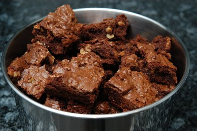

| Zutaten: | |
| 120 g | Margarine |
| 175 g | Kochschokolade |
| 220 g | Zucker |
| 2 | Eier |
| 1 Prise | Salz |
| 1/2 Päckli | Vanillezucker |
| 120 g | Mehl |
| 150 g | Baumnüsse, grob gehackt |
Margarine in einer Pfanne schmelzen.
Kochschokolade beigeben, schmelzen, vom Feuer nehmen
Zucker beigeben, mischen
Eier, Prise Salz, Vanillezucker beigeben, alles kurz verrühren
Mehl, Baumnüsse, grob gehackt beigeben, mischen
Masse in die mit Backtrennpapier ausgekleidete Carré Form (23x23cm) einfüllen, glatt streichen
Backen: 30 -40 Minuten bei guter Mittelhitze (200-220°) auf der zweituntersten Rille des vorgeheizten Ofens. ( Ev 10 Minuten vor Schluss nur noch mit Unterhitze backen) Noch heiss in die gewünschte Würfelgrösse schneiden.
Ganz frisch gegessen, wie es die Amerikaner tun, schmecken die Brownies wie Schokoladencake. Sie sollten innen noch feucht sein. Bei längerer Lagerung werden sie etwas trockener und härter, jedoch nicht schlechter.
Claudia Häfliger
"Ich habe jeweils die doppelte Portion gemacht und auf einem kleineren Kuchenblech ausgestrichen. Das gibt gleich viel Arbeit."
Von Sandra am 7.9.2005: Schmecken hervorragend....gefährlich gut!
Am 14.11.2009 habe ich meine Brownies vielleicht eine Minute zu lange gebacken. Die doppelte Menge passt gut auf mein Betty Bossi Hochrand Backblech. Da sie aber anschliessend kleben wäre ein Backtrennpapier vermutlich ganz gut. Schmecken sehr fein. RE
@LINKBACK_TAG@ @WAKELOCK@